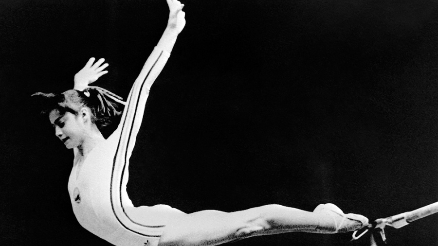

¿Que es la Gimnasia?
Del latín gymnasia, la gimnasia es la disciplina que busca desarrollar, fortalecer y dar flexibilidad al cuerpo mediante rutinas de ejercicios físicos. Puede llevarse a cabo como deporte (a modo de competencia) o de manera recreativa.
La gimnasia como deporte competitivo
La Fédération Internationale de Gymnastique (FIG) es la organización encargada de regular la práctica deportiva de la gimnasia. Esta asociación reconoce seis disciplinas: general, artística, aeróbica, acrobática, rítmica y de trampolín.
La gimnasia general se realiza en grupos desde seis personas y consiste en la ejecución sincronizada de coreografías. La gimnasia artística supone la expresión corporal siguiendo música, mientras que la gimnasia aeróbica implica movimientos de mayor intensidad.
La gimnasia acrobática es una disciplina grupal que se realiza con aparatos; la gimnasia rítmica sólo tiene modalidad femenina y también requiere la utilización de elementos (como pelota o aro). Por último, la gimnasia de trampolín, como su nombre lo indica, se lleva a cabo con una plataforma sobre la cual se salta.
Historia de la Gimnasia
Cuentan que en la época del siglo quinto antes de Cristo, la gimnasia se eempezó a implementar como un deporte aplicado al juego de los atletas porque corrían, saltaban, luchaban y arrojaban el disco y la barra.
En la antigua Grecia, practicaban la Gimnasia para prepararse para la guerra. Pero también incluyeron aplicaciones de la gimnasia para montar y desmontar los caballos que se utilizaban en el circo. Además se incluyó como una clase para todos los estudiantes.
A medida que pasaba el tiempo, Friedrich Jahn fue conocido como el “padre de la gimnasia”. Fue quien introdujo la barra horizontal, las barras paralelas, el caballo lateral con los pomos, la viga de balance, la escala, y el salto del caballo para ser practicado sólo por hombres.
Siglos más adelante, la gimnasia fue introducida a Alemania y Suecia y luego fue incluida en los primeros juegos olímpicos modernos llevados a cabo en 1896. Las mujeres comenzaron a participar en algunos eventos de la gimnasia en los años 20.
En 1928 fue celebrada la primera competición olímpica de mujeres en los juegos de Amsterdam, aunque el único acontecimiento era la gimnasia sincronizada. Los ejercicios combinados para las mujeres primero fueron llevados a cabo en 1928, y en 1952 las Olimpiadas ofrecieron el primer régimen completo para las mujeres.
Hasta 1972, la gimnasia para los hombres sobresalió por energía y fuerza, mientras que las mujeres realizaron las rutinas centradas en la tolerancia del movimiento (armonía). Una gimnasta soviética de 17 años llamada Olga Korbut llamó la atención a la audiencia de la televisión con sus rutinas innovadoras y explosivas.
En 1.976 los juegos olímpicos fueron llevados a cabo en Montreal, Canadá en los que Nadia Comaneci fue la que demostró a todo el mundo que la perfección podría ser alcanzada desde la gimnasia.
Actualmente, la gimnasia es un deporte reconocido en todo el planeta y muchos niños y niñas combinan la práctica y la participación de la gimnasia con las tareas del colegio.
Tipos de Gimnasia
La gimnasia moderna, regulada por la Federación Internacional de Gimnasia (FIG), se compone de seis disciplinas: artística, rítmica, trampolín, aeróbica, acrobática y general:
Gimnasia artística
La gimnasia artística es una disciplina olímpica que consiste en la realización de una composición coreográfica, combinando, de forma simultánea y a una alta velocidad, movimientos corporales. Se compone de diferentes modalidades según las categorías masculina y femenina. Los aparatos empleados en categoría femenina son barras asimétricas, barra de equilibrio, suelo y salto de potro, mientras que en la categoría masculina son anillas, barra fija, caballo con arcos, barras paralelas, salto de potro y suelo.
Gimnasia rítmica
La gimnasia rítmica es una disciplina olímpica en la que se combinan elementos de ballet, gimnasia, danza y el uso de diversos aparatos como la cuerda, el aro, la pelota, las mazas y la cinta. En este deporte se realizan tanto competiciones como exhibiciones, en las que la gimnasta se acompaña de música para mantener un ritmo en sus movimientos. Se pueden distinguir dos modalidades: la individual y la de conjuntos.
Gimnasia en trampolín
La gimnasia en trampolín es una disciplina que consiste en realizar una serie de ejercicios ejecutados en varios aparatos elásticos, donde la acrobacia es la principal protagonista. Existen principalmente tres especialidades: tumbling, doble mini-tramp y cama elástica.
Gimnasia aeróbica
La gimnasia aeróbica, antes conocida como aeróbic deportivo, es una disciplina de la gimnasia en la que se ejecuta una rutina de entre 100 y 110 segundos con movimientos de alta intensidad derivados del aeróbic tradicional además de una serie de elementos de dificultad.
Gimnasia acrobática
La gimnasia acrobática, también conocida como acrosport, es una disciplina de grupo en la que existen las modalidades de pareja masculina, pareja femenina, pareja mixta, trío femenino y cuarteto masculino. Se realizan manifestaciones gimnásticas colectivas donde el cuerpo actúa como aparato motor, de apoyo e impulsor de otros cuerpos realizando saltos, figuras y pirámides humanas.
Gimnasia general
La gimnasia general es la única disciplina no competitiva de gimnasia aceptada por la FIG. En ella participa gente de todas las edades en grupos desde 6 hasta 150 gimnastas que ejecutan o hacen coreografías de manera sincronizada. Los grupos pueden ser de un solo sexo o cualquier tipo de sexo (mixto). La gimnasia general se divide en tres categorías que son: grupos blancos, azules y rojos. El grupo blanco es la categoría más elemental, el grupo azul es el intermedio y el grupo rojo es el más avanzado. Cada uno de estos tiene ciertas reglas que cumplir sobre la base de elementos gimnásticos que debe realizar.